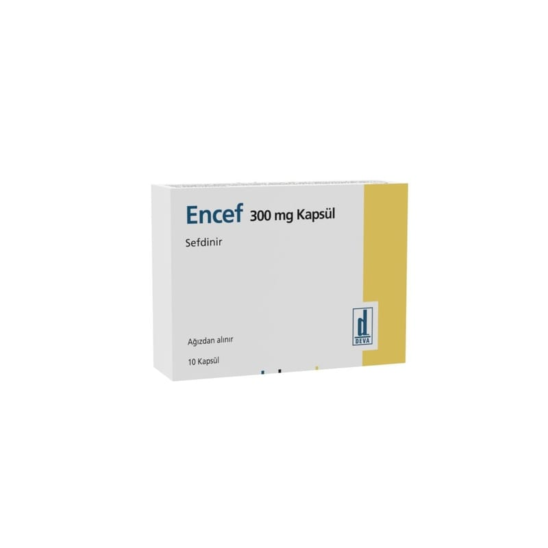

<!DOCTYPE html><html lang="tr"><head><meta charset="utf-8"><meta name="viewport" content="width=device-width,initial-scale=1"><meta name="referrer" content="strict-origin-when-cross-origin"><title>Encef 300 mg Kapsül, 10 Adet – Kullanma Talimatı | İlaç Pro</title><meta name="description" content="ENCEF 300 mg kapsüldeki etkin madde sefdinirdir. Sefdinir, üçüncü kuak sefalosporin grubu olarak adlandırılan…"><link rel="canonical" href="https://mustafayalvac244-tech.github.io/ilacpro-veri/ilac/8699525157492.html"><meta property="og:type" content="article"><meta property="og:locale" content="tr_TR"><meta property="og:title" content="Encef 300 mg Kapsül, 10 Adet – Kullanma Talimatı"><meta property="og:description" content="ENCEF 300 mg kapsüldeki etkin madde sefdinirdir. Sefdinir, üçüncü kuak sefalosporin grubu olarak adlandırılan…"><meta property="og:image" content="https://mustafayalvac244-tech.github.io/ilacpro-veri/gorsel/8699525157492.jpg"><meta property="og:image:width" content="800"><meta property="og:image:height" content="800"><meta property="og:image:type" content="image/jpeg"><meta property="og:url" content="https://mustafayalvac244-tech.github.io/ilacpro-veri/ilac/8699525157492.html"><link rel="stylesheet" href="_sayfa.css"></head><body data-id="844e3a790859"><main><header>İlaç Pro · Kullanma Talimatı (TİTCK)</header><h1>Encef 300 mg Kapsül, 10 Adet</h1><figure></figure><section id="nedir"><div class="bas"><h2>Ne için kullanılır</h2><small>KT · Bölüm 1</small></div><p>ENCEF 300 mg kapsüldeki etkin madde sefdinirdir. Sefdinir, üçüncü kuak sefalosporin grubu olarak adlandırılan antibakteriyel bir ilaç grubunda yer alır. ENCEF, 10 ve 20 kapsül içeren, opak PVC-Aklar/Alüminyum blister ambalajlarda sunulmaktadır. ENCEF, ilacın aktif oldu ğu bakterilerin neden olduğu enfeksiyonların tedavisinde kullanılır. Yeti kinler ve ergenlik çağındaki gençlerde ilacın kullanılabileceği bazı enfeksiyonlar Bu ilacı kullanmaya balamadan önce bu KULLANMA TALĐMATINI dikkatlice okuyunuz, çünkü sizin için önemli bilgiler içermektedir.
• Bu kullanma talimatını saklayınız. Daha sonra tekrar okumaya ihtiyaç duyabilirsiniz.
• E ğer ilave sorularınız olursa, lütfen doktorunuza veya eczacınıza danıınız.
• Bu ilaç ki isel olarak sizin için reçete edilmitir, bakalarına vermeyiniz.
• Bu ilacın kullanımı sırasında, doktora veya hastaneye gittiğinizde doktorunuza bu ilacı kullandığınızı söyleyiniz.
• Bu talimatta yazılanlara aynen uyunuz. Đlaç hakkında size önerilen dozun dıında yüksek veya dü ük doz kullanmayınız.</p><p>unlardır: Akciğer iltihabı (pnömoni), uzun süreli nefes alma güçlüğü olan hastalarda göğüs enfeksiyonları, sinüs enfeksiyonları, boğaz/bademcik enfeksiyonları, cilt enfeksiyonları. Çocuklarda ilacın kullanılabileceği bazı enfeksiyonlar unlardır: Orta kulak iltihabı, boğaz/bademcik enfeksiyonları, cilt enfeksiyonları.</p></section><div id="kt"></div></main><footer><p>Kaynak: <a id="pdf" href="https://titck.gov.tr/storage/kubKtAttachments/1c4754be17315.pdf" rel="noopener">TİTCK Kullanma Talimatı</a> · onay 01.02.2012</p><p>Bu sayfa yorum içermez; metin Kullanma Talimatı'ndan olduğu gibi alınmıştır.</p><p>İlaç Pro tıbbi tavsiye vermez, tanı koymaz, doz önermez ve bir tıbbi cihaz değildir. Kullanma Talimatı metinleri TİTCK'dan olduğu gibi aktarılır. İlaç kullanımıyla ilgili kararlar için doktorunuza veya eczacınıza danışın.</p></footer><nav><a class="btn b1" id="ac" href="ilacpro://ilac/8699525157492">Uygulamada aç</a><a class="btn b2" id="indir" href="../indir/">İlaç Pro'yu indir</a></nav><script src="_sayfa.js" defer></script></body></html>